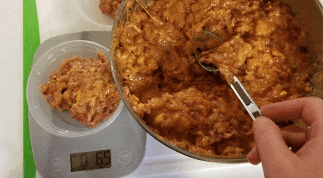

Cat Food

Description
This is how to make food for a cat hope that this helps
you feed all your cats and keep the rodents away.
Ingridients
- 5 pounds chicken thighs with bone
- 7 oz. raw chicken liver
- 14 oz. raw chicken heart
- 8 oz. bottled spring water
- 4 raw egg yolks
- 2,000mg taurine
- 4,000mg wild salmon oil
- 200mg vitamin B complex
- 200 IU vitamin E
- 1 ½ tsp lite iodized salt
Steps
- Remove the skin from half the chicken thighs,
but do not remove the fat.
- Remove the bone from 20% to
25% of the chicken thighs and rinse the meat with water.
- Combine the dry supplements in a small bowl and mix well.
- Whisk in the egg yolks and water to create a slurry.
- Weigh out and chop the chicken liver, heart, and thigh meat.
- Place a bowl under the meat grinder and feed the ingredients through.
- Add the liver, heart, and fish oil capsules at intervals (use the entire fish oil capsule).
- Transfer the ground mixture to a large bowl and mix in the slurry.
Return to main page